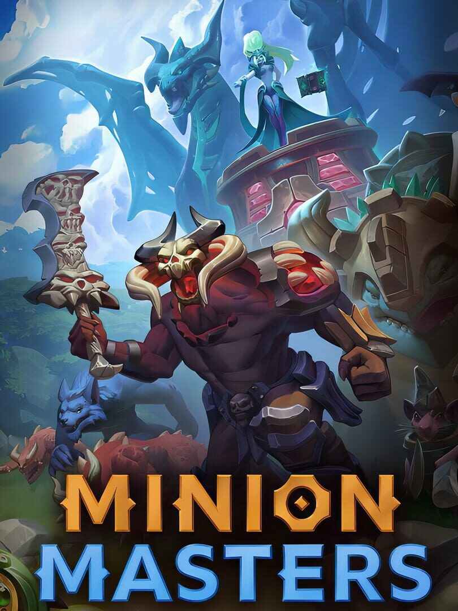

Minion Masters
Minion Masters
Detalhes
|  | |
| Tempo de jogo | Não Jogado |
| Última Atividade | Nunca |
| Adicionado | 11/02/2025 13:17:42 |
| Modificado | 11/02/2025 13:37:26 |
| Status de Conclusão | Not Played |
| Biblioteca | Steam |
| Fonte | Steam |
| Plataforma | PC (Windows) |
| Data de Lançamento | 24/05/2019 |
| Pontuação da Comunidade | 66 |
| Avaliação da crítica | |
| Pontuação do Usuário | |
| Gênero | Adventure Card & Board Game Indie Real Time Strategy (RTS) Role-playing (RPG) Strategy Turn-based strategy (TBS) |
| Desenvolvedor | BetaDwarf |
| Editor | BetaDwarf |
| Funções | Co-Operative Massively Multiplayer Online (MMO) Multiplayer Single Player |
| Links | Steam Official Wikia YouTube Android Twitch |
| Tag | |
Descrição
Os melhores Mestres do continente se enfrentam em um conflito sem fim em busca de glória. Você é um Arqueiro, um Mago, um Guerreiro? Escolha um Mestre e monte um Baralho que combine com seu estilo de jogo. Crie seus próprios combos para derrubar o Mestre adversário em jogos estratégicos dinâmicos de 2 a 6 minutos.

Descubra um dos melhores jogos gratuitos já avaliados do Steam! Minion Masters é um jogo PvP que mistura elementos de jogos de Estratégia em Tempo Real (RTS) de Defesa de Torres e jogos de Cartas estratégicos, com uma verdadeira experiência gratuita.
É um jogo online incrivelmente simples, mas difícil de dominar. Estratégico e dinâmico, tanto para jogadores competitivos quanto para casuais.
Jogue duelos 1x1 ou combine baralhos em partidas 2x2, com total cross-play entre Steam, Discord, Xbox… e ainda mais por vir! Ou embarque em aventuras solo por diferentes eras e conflitos do continente. Descubra as lendas dos Elfos, Empíricos, Zen-Chi e mais...

Escolha o seu Mestre e as suas cartas dentre mais de 10 facções, cada uma com a sua própria especialidade. Combine o seu Mestre e as suas cartas para criar uma infinidade de combos e táticas, a sua imaginação é o limite.
Jogue do seu jeito, crie as suas próprias estratégias e mostre as suas habilidades na arena!
Ganhe incontáveis recompensas gratuitas para te ajudar a colecionar mais de 200 cartas com missões diárias, eventos no jogo ou modos de jogo temporários. Ganhe as novas cartas da temporada gratuitamente (e sem a aleatoriedade) com o Passe de Temporada gratuito!

Minion Masters é atualizado consistentemente para garantir uma jogabilidade balanceada e com novos conteúdos, com feedback da comunidade, em que as opiniões dos jogadores importam.
É o resultado de um trabalho em conjunto entre os desenvolvedores e a comunidade - junte-se ao nosso servidor do Discord e faça a sua voz ser ouvida!
Compita pela sua guilda em Batalhas de Conquista e ganhe recompensas para compartilhar com seus companheiros!
Forme equipe em 2x2, combine seus baralhos para criar a estratégia definitiva e chegar à classificação Competidor juntos!
Conheça outros jogadores em uma comunidade positiva e ativa, de mais de 1,5 milhões de jogadores, e siga streamers no Twitch. Ganhe todos os tipos de prêmios com os drops e descubra um recurso único do Twitch: vincule a sua conta do Minion Masters para aparecer na arena e interagir em tempo real com os comandos de chat!

LISTA DE RECURSOS
Descubra um dos melhores jogos gratuitos já avaliados do Steam! Minion Masters é um jogo PvP que mistura elementos de jogos de Estratégia em Tempo Real (RTS) de Defesa de Torres e jogos de Cartas estratégicos, com uma verdadeira experiência gratuita.
É um jogo online incrivelmente simples, mas difícil de dominar. Estratégico e dinâmico, tanto para jogadores competitivos quanto para casuais.
Jogue duelos 1x1 ou combine baralhos em partidas 2x2, com total cross-play entre Steam, Discord, Xbox… e ainda mais por vir! Ou embarque em aventuras solo por diferentes eras e conflitos do continente. Descubra as lendas dos Elfos, Empíricos, Zen-Chi e mais...
MECÂNICAS DE JOGO INOVADORAS
Mantenha o controle das pontes para subir de nível e liberar as habilidades do seu Mestre, que são capazes de alterar totalmente o rumo da batalha. Todas as cartas têm mecânicas específicas: faça a jogada certeira para criar um combo e pegar o seu oponente de surpresa!Escolha o seu Mestre e as suas cartas dentre mais de 10 facções, cada uma com a sua própria especialidade. Combine o seu Mestre e as suas cartas para criar uma infinidade de combos e táticas, a sua imaginação é o limite.
Jogue do seu jeito, crie as suas próprias estratégias e mostre as suas habilidades na arena!
UMA EXPERIÊNCIA BALANCEADA E (VERDADEIRAMENTE) GRATUITA
Estamos comprometidos em oferecer uma jogabilidade justa, em que a sua habilidade é que faz a diferença. No Minion Masters, você pode facilmente ganhar, criar ou tentar saquear as suas cartas - e é só nisso que você precisará ser competitivo, já que as cartas sempre se mantêm as mesmas. Qualquer um pode enfrentar qualquer um, tudo depende da SUA habilidade.Ganhe incontáveis recompensas gratuitas para te ajudar a colecionar mais de 200 cartas com missões diárias, eventos no jogo ou modos de jogo temporários. Ganhe as novas cartas da temporada gratuitamente (e sem a aleatoriedade) com o Passe de Temporada gratuito!
EXPANSÕES GRATUITAS E ATUALIZAÇÕES FREQUENTES
Novas cartas, aventuras solo, skins, arenas e muito mais para se esperar com novas expansões frequentes e história em evolução.Minion Masters é atualizado consistentemente para garantir uma jogabilidade balanceada e com novos conteúdos, com feedback da comunidade, em que as opiniões dos jogadores importam.
É o resultado de um trabalho em conjunto entre os desenvolvedores e a comunidade - junte-se ao nosso servidor do Discord e faça a sua voz ser ouvida!
JUNTE-SE A UMA GUILDA E CONHEÇA NOVOS JOGADORES
Faça parte de algo importante! Junte-se a uma guilda, você sempre será bem-vindo na taverna!Compita pela sua guilda em Batalhas de Conquista e ganhe recompensas para compartilhar com seus companheiros!
Forme equipe em 2x2, combine seus baralhos para criar a estratégia definitiva e chegar à classificação Competidor juntos!
Conheça outros jogadores em uma comunidade positiva e ativa, de mais de 1,5 milhões de jogadores, e siga streamers no Twitch. Ganhe todos os tipos de prêmios com os drops e descubra um recurso único do Twitch: vincule a sua conta do Minion Masters para aparecer na arena e interagir em tempo real com os comandos de chat!
LISTA DE RECURSOS
- -Ranqueadas 1x1 e 2x2
- -Partidas rápidas de 2 a 6 minutos
- -Modos de jogo épicos e excitantes: Draft, Caos…
- -Mais de 260 Cartas para colecionar, de mais de 10 facções diferentes
- -11 Mestres e mais por vir
- -Arenas personalizadas, skins, emotes, guildas...
- -Modo história, com uma história que evolui
- -Uma história fantástica, épica e incrível!
- -Replay das partidas
- -Um monte de recompensas gratuitas
- -Torneios da Comunidade
- -Prêmios e eventos no Twitch
- -Fluxo constante de novos recursos e balanceamento
- -Uma equipe de desenvolvedores bem entusiasmada